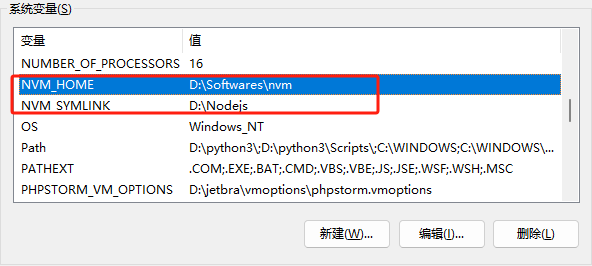
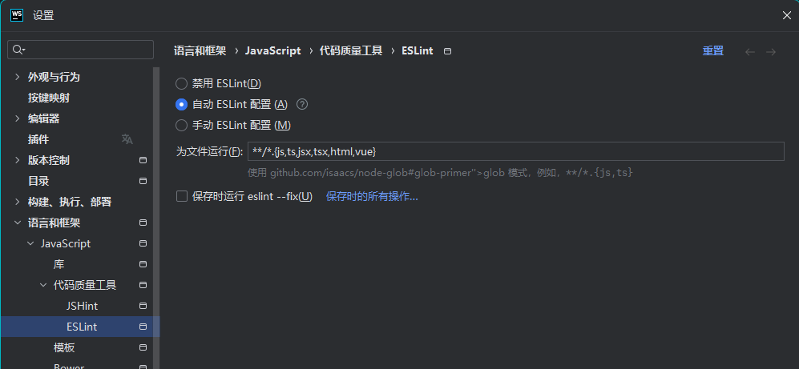
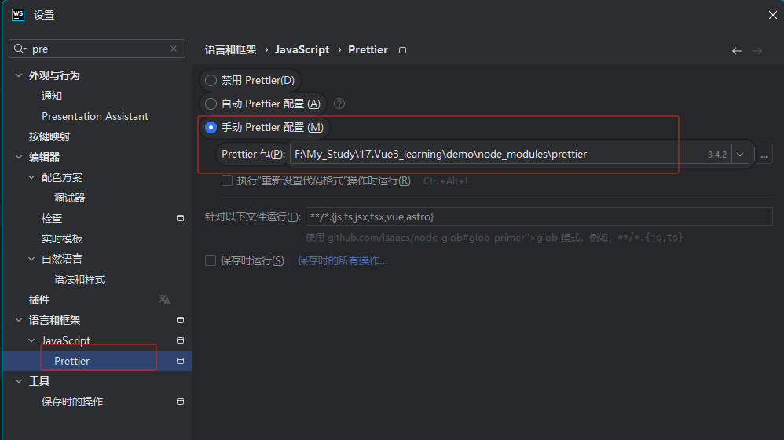
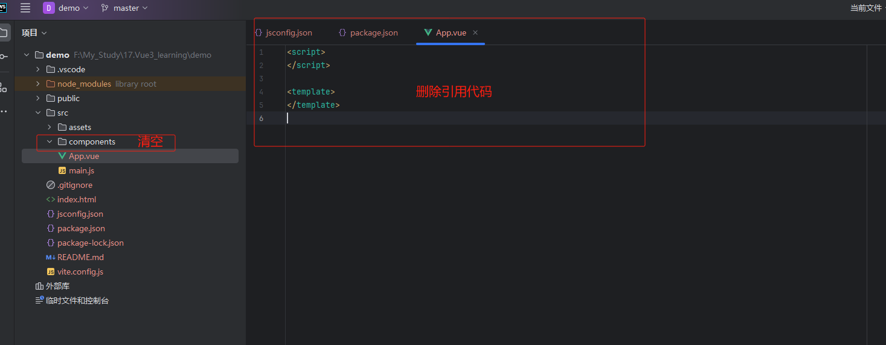

vue3-入门¶
Vue 使用一种基于 HTML的模板语法，使我们能够声明式地将其组件实例的数据绑定到呈现的 DOM 上。所有的 Vue 模板都是语法层面合法的 HTML，可以被符合规范的浏览器和 HTML解析器解析。
** 官方文档：**https://cn.vuejs.org/guide/introduction.html
一、nvm工具的使用¶
安装文档：https://nvm.p6p.net/download.html
1 基础命令+安装配置¶
nvm list # 查看已经安装的版本
nvm list installed # 查看已经安装的版本
nvm list available # 查看网络可以安装的版本
nvm install latest # 安装最新版本node.js
nvm on # 打开nodejs版本控制
nvm off # 关闭nodejs版本控制
nvm arch # 查看当前系统的位数和当前nodejs的位数
nvm install [arch] # 安装制定版本的node 并且可以指定平台 version 版本号 arch 平台
nvm proxy [url] # 查看和设置代理
nvm node_mirror [url] # 设置或者查看setting.txt中的node_mirror，如果不设置的默认是 https://nodejs.org/dist/
nvm npm_mirror [url] # 设置或者查看setting.txt中的npm_mirror,如果不设置的话默认的是：https://github.com/npm/npm/archive/.
nvm uninstall 16.9.1 # 卸载指定的版本
nvm use [version] [arch] # 切换制定的node版本和位数
nvm root [path] # 设置和查看root路径
nvm version # 查看当前的版本
安装完成，自动附带环境变量，其中D:\Nodejs
这个是当前使用nodejs文件夹快捷方式

添加镜像源：
nvm npm_mirror https://npmmirror.com/mirrors/npm/
nvm node_mirror https://npmmirror.com/mirrors/node/
二、vue3创建项目¶
保姆级创建项目指导：https://www.bilibili.com/video/BV1MHSMYvEJq/?spm_id_from=333.1391.0.0&vd_source=8bbd1ae82def35aeb499dde7680a0ee6
1 项目技术选型¶
-
Vue3：主流前端框架
-
Vite/Vue-CLl 脚手架 脚手架：快速启动项目
-
Ant Design 组件库：快速开发 U界面
-
Axios 请求库：向后端发送请求
-
Pinia 状态管理：维护前端全局数据
-
前端工程化：ESLint+Prettier+TypeScript，保证前端项目开发规范，安装命令：
Prettiernpm install -save-dev ESLint Prettier -
WebStorm项目配置：


2 npm命令¶
镜像源：
1. 官方镜像：https://registry.npmjs.org/
2. 淘宝镜像：https://registry.npmmirror.com
3. cnpm镜像：https://r.cnpmjs.org/
4. 阿里云镜像：https://npm.aliyun.com/
5. 中国科技大学镜像：https://mirrors.ustc.edu.cn/npm/
6. 华为云镜像：https://mirrors.huaweicloud.com/repository/npm/
7. 七牛云镜像：https://npm.qiniu.com/
# npm的配置文件是：.npmrc ，默认在用户目录 C:\Users\用户\.npmrc 或 ~/.npmrc
npm config ls ## 查看简单的配置项
npm config ls -l ## 查看所有配置项
npm config get cache ## 查看缓存配置，get后面可以跟任意配置项
npm config edit ## 直接编辑config文件，这个会打开文本
npm config set strict-ssl false # 取消ssl验证
npm config get registry # 查看镜像源
npm config set registry https://registry.npmmirror.com # 配置镜像源
npm cache clean --force # 清理npm缓存
npm config get userconfig # 查看配置文件路径，
3 创建vue3项目¶
3.1 使用npm创建项目¶
# 创建项目命令
npm init vue@latest
# 项目名: demo
cd demo
npm install
npm run dev
# 访问即可看到界面~
目录解释：
.vscode --- Vscode工具的配置文件夹
node_modules --- Vue项目的运行依赖文件夹
public --- 资源文件夹(浏览器图标)
srcgit --- 源码文件夹
.gitignore --- 忽略文件
index.htm --- 如果HTML文件
package.json --- 信息描述文件
./vue3-入门/ .md --- 注释文件
vite.config.js --- Vue配置文件
删除默认文件：
# 删除文件：
src/components/*
# 清空内容
App.vue
<template>
<h3 style="color: red">模板语法</h3>
<p style="color: blue">Message: {{ msg }}</p>
<p>{{ number + 1 }}</p>
<p>{{ ok ? "Yes" : "No" }}</p>
<p>{{ name.split(",").reverse()[0] }}</p> <!--获取最后一个（不能-1哈，注意）-->
</template>
<script>
export default {
data() {
// 要有return
return {
msg: "神奇的语法~",
number: 10,
ok: true,
name: "cen,hong,chang"
}
}
}
</script>
3.2 使用pnpm创建项目(+TS)¶
npm install -g pnpm
pnpm create vite basic --template vue-ts
# 进入项目进行初始化
cd basic
pnpm install
# 项目工程化
pnpm add -D typescript ts-node
pnpm add -D eslint
pnpm add -D eslint-plugin-vue vue-eslint-parser
pnpm add -D @typescript-eslint/parser @typescript-eslint/eslint-plugin typescript
pnpm add -D prettier eslint-config-prettier eslint-plugin-prettier
pnpm add -D husky lint-staged
3.2.1 .eslintrc.js 配置¶
module.exports = {
root: true,
env: {
node: true,
browser: true,
es2021: true,
},
parser: 'vue-eslint-parser',
parserOptions: {
parser: '@typescript-eslint/parser', // 支持 TS 语法
ecmaVersion: 2021,
sourceType: 'module',
extraFileExtensions: ['.vue'],
},
extends: [
'eslint:recommended',
'plugin:vue/vue3-recommended', // Vue3 推荐规则
'plugin:@typescript-eslint/recommended', // TypeScript 推荐规则
'plugin:prettier/recommended', // Prettier 整合
],
plugins: ['vue', '@typescript-eslint', 'prettier'],
rules: {
// ---------- 基础 ----------
'prettier/prettier': 'error',
'no-console': process.env.NODE_ENV === 'production' ? 'warn' : 'off',
'no-debugger': process.env.NODE_ENV === 'production' ? 'warn' : 'off',
// ---------- TypeScript ----------
'@typescript-eslint/no-explicit-any': 'off', // 允许使用 any
'@typescript-eslint/explicit-module-boundary-types': 'off', // 不强制函数返回类型
'@typescript-eslint/no-unused-vars': ['warn', { argsIgnorePattern: '^_' }], // 忽略 _ 开头参数
// ---------- Vue ----------
'vue/multi-word-component-names': 'off', // 单词组件名允许
'vue/script-setup-uses-vars': 'error', // setup变量被认为已使用
'vue/html-indent': ['error', 2],
'vue/max-attributes-per-line': ['warn', { singleline: 5 }],
'vue/singleline-html-element-content-newline': 'off',
},
overrides: [
{
files: ['*.ts', '*.tsx'],
rules: {
'no-undef': 'off',
},
},
],
ignorePatterns: [
'dist',
'node_modules',
'build',
'public',
'*.config.js',
],
};
3.2.2 .prettierrc 配置¶
{
"printWidth": 100,
"tabWidth": 2,
"useTabs": false,
"semi": true,
"singleQuote": true,
"trailingComma": "all",
"bracketSpacing": true,
"arrowParens": "always",
"endOfLine": "auto"
}
3.2.3 prettierignore配置¶
node_modules
dist
build
public
3.2.4 src/env.d.ts (解决APP.vue文件导入问题)¶
/// <reference types="vite/client" />
declare module '*.vue' {
import { DefineComponent } from 'vue';
const component: DefineComponent<{}, {}, any>;
export default component;
}
4 删除默认代码¶

三、文本插值({{ xxx }})¶
<script>
export default {
data() {
// 要有return
return {
msg: "神奇的语法~",
number: 10,
ok: true,
name: "cen,hong,chang"
}
}
}
</script>
<template>
<h3 style="color: red">模板语法</h3>
<p style="color: blue">Message: {{ msg }}</p>
<p>{{ number + 1 }}</p>
<p>{{ ok ? "Yes" : "No" }}</p>
<p>{{ name.split(",").reverse()[0] }}</p> <!--获取最后一个（不能-1哈，注意）-->
</template>
每个绑定仅支持单一的表达式，也就是一段能够被求值的JavaScript 代码。一个简单的判断方法是： * *是否可以合法地写在 retum 后面 **
四、属性绑定(v-bind)¶
双大括号不能在 HTML attributes 中使用。想要响应式地绑定一个 attribute，应该使用 v-bind 指令。
<script>
export default {
data() {
return {
dynamicId: "dynamicId", //ID选择器
greenColor: "green", //类选择器
isButtonDisabled: false, //动态布尔类型
objectOfAttrs: {
dynamicId: "dynamicId", //ID选择器
greenColor: "red", //类选择器
}
}
}
}
</script>
<template>
<hr>
<div v-bind:id="dynamicId" v-bind:class="greenColor">
<h1>TITLE</h1>
<button :disabled="isButtonDisabled">BUTTON</button> <!-- 简写形式 -->
</div>
<div v-bind="objectOfAttrs">
<h2>绑定多个属性</h2>
</div>
</template>
五、条件渲染(v-if)¶
v-if 指令用于条件性地渲染一块内容。这块内容只会在指令的表达式返回真值时才被渲染。
v-if VS v-show
v-if是“真实的”按条件渲染，因为它确保了在切换时，条件区块内的事件监听器和子组件都会被销毁与重建。
v-if也是惰性的：如果在初次渲染时条件值为 false，则不会做任何事。条件区块只有当条件首次变为 true 时才被渲染。
相比之下，v-show 简单许多，元素无论初始条件如何，始终会被渲染，只有CSS display 属性会被切换。
总的来说， v-if有更高的切换开销，而 v-show有更高的初始渲染开销。因此，如果需要频繁切换，则使用v-show 较好。
如果在运行时绑定条件很少改变，则v-if会更合适。
<script>
export default {
data() {
return {
flag: true, // false
type: "T"
}
}
}
</script>
<template>
<hr>
<h2>条件渲染</h2>
<!-- v-if/v-else/v-else-if只有flag为真,才会渲染 -->
<div v-if="flag">if逻辑 - flag: {{ flag }}</div>
<div v-else>else逻辑 - flag: {{ flag }}</div>
<div v-if="type === 'A'">type: {{ type }}</div>
<div v-else-if="type === 'A'">type: {{ type }}</div>
<div v-else-if="type === 'B'">type: {{ type }}</div>
<div v-else-if="type === 'C'">type: {{ type }}</div>
<div v-else>为其他值，type: {{ type }}</div>
<!-- v-show基于CSS切换,不管flag是否为真,都会渲染,然后通过display控制是否显示 -->
<div v-show="flag">为其他值，type: {{ type }}</div>
</template>
六、列表渲染(v-for)¶
<p v-for="name in names">{{ name }}</p>
<p v-for="name of names">{{ name }}</p> (推荐使用of会更好)
<script>
export default {
data() {
return {
names: ["中兴", "华为", "大唐", "诺基亚"]
}
}
}
</script>
<template>
<hr>
<h2>列表渲染</h2>
<p v-for="name in names">{{ name }}</p>
<p v-for="(name,index) in names">序号：{{ index }}，名称：{{ name }}</p> --> 写法一
<p v-for="(name,index) in names" :key="index">序号：{{ index }}，名称：{{ name }}</p> --> 写法二 减少内存消耗
</template>
应用场景：
后端数据一般格式：result = [{'id':1,'name':'xxx','age':32},{'id':2,'name':'yyy','age':33}...]
所以推荐写法：<p v-for="item of result" :key="item.id">ID：{{ item.id }}，名称：{{ item.name }}</p> --> 写法三
* *key 在这里是一个通过 v-bind 绑定的特殊 attribute，这里可以用: 简写代替，即：: key=" item.id" 等价于 v-bind: key=" item.id" **
* *推荐在任何可行的时候为 v-for 提供一个 key attribute **
* *key 绑定的值期望是一个基础类型的值，例如字符串或 number 类型 **
七、事件处理(v-on)¶
我们可以使用 von 指令( 简写为 @) 来监听 DOM 事件，并在事件触发时执行对应的JavaScript。
基本用法:
v-on:click="methodName"
或
@click="methodName"
methodName 为函数名或表达式
1 内联事件¶
内联事件处理器事件被触发时执行的内联JavaScript语句( 与onclick 类似)；
<script>
export default {
data() {
return {
count: 0
}
}
}
</script>
<template>
<hr>
<button v-on:click="count++">add</button>
<br>
<button @click="count--">reduce</button>
<p>{{ count }}</p>
</template>
2 方法事件¶
方法事件处理器一个指向组件上定义的方法的属性名或是路径
<script>
export default {
data() {
return {
count: 0,
totalCount() {
//自定义++
console.log("currentCount", this.count)
this.count++
}
}
}
}
</script>
<template>
<hr>
<button v-on:click="count++">add</button>
<br>
<button @click="count--">reduce</button>
<p>{{ count }}</p>
<button @click="totalCount">totalCount</button>
</template>
八、事件传参(param,$event)¶
<script>
export default {
data() {
return {
dataList: ["cenhongchang", "xuexi", "study"],
eventClick(param, e) {
console.log("param", param)
console.log("e", e)
}
}
}
}
</script>
<template>
<hr>
<p v-for="(name,index) of dataList" @click="eventClick(name,$event)" :key="index">
<button>{{ name }}</button>
</p>
</template>
九、事件修饰符¶
文档链接：https://cn.vuejs.org/guide/essentials/event-handling.html#event-modifiers
.stop.prevent.self.capture.once.passive
在处理事件时调用 * event.preventDefault() ** 或 * even.stopPropagation() ** 是很常见的。
尽管我们可以直接在方法内调用，但如果方法能更专注于数据逻辑而不用去处理 DOM 事件的细节会更好，为解决这一问题，Vue 为 v-on 提供了事件修饰符，常用有以下几个!
1 阻止默认事件¶
<script>
export default {
data() {
return {
count: 0,
name: "cenhongchang",
testClick(e) {
// e.preventDefault() //阻止默认事件
this.count++
console.log(this.name, "点击", this.count, "次")
}
}
}
}
</script>
<template>
<hr>
<a href="http://www.baidu.com" @click.prevent="testClick">点击此处</a>
</template>
2 阻止事件冒泡¶
<script>
export default {
data() {
return {
divFunc() {
console.log("div标签")
},
pFunc(e) {
// e.stopPropagation() // 阻止父级元素事件触发
console.log("p标签")
}
}
}
}
</script>
<template>
<hr>
<div @click="divFunc">
div标签
<p @click.stop="pFunc">p标签</p>
</div>
</template>
十、数组变化侦测¶
1 变更方法¶
Vue 能够侦听响应式数组的变更方法，并在它们被调用时触发相关的更新。
这些变更方法包括:
push()
pop()
shift()
unshift()
splice()
sort()
reverse()
示例：
<script>
export default {
data() {
return {
dataList: ["张三", "李四", "王麻子"],
};
},
methods: {
addHandler() {
// let newDataList = this.dataList.push("七三"); // 变更方法->源数据会被修改，返回增加之后的长度
// console.log("newDataList:", newDataList);
let newDataList = this.dataList.concat(["七三"]); // 非变更方法->源数据不会更改，返回当前数组合并之后的数组
console.log("dataList:", this.dataList);
console.log("newDataList:", newDataList);
},
},
};
</script>
<template>
<hr />
<h3>数组变化侦测</h3>
<button @click="addHandler">添加数据(push)</button>
<div>
<ul>
<li v-for="(item, index) of dataList" :key="index">{{ item }}</li>
</ul>
</div>
</template>
2 非变更方法¶
filter()
concat()
slice()
methods: {
addHandler() {
// let newDataList = this.dataList.push("七三"); // 变更方法->源数据会被修改，返回增加之后的长度
// console.log("newDataList:", newDataList);
let newDataList = this.dataList.concat(["七三"]); // 非变更方法->源数据不会更改，返回当前数组合并之后的数组
console.log("dataList:", this.dataList);
console.log("newDataList:", newDataList);
},
十一、计算属性(computed)¶
<script>
export default {
data() {
return {
testData: {
name: "cenhongchang",
content: [1, 2, 3],
},
};
},
computed: {
//计算属性 -> 有缓存 代码没更改只会计算一次
getName() {
return this.testData.content.length > 0 ? "Yes" : "No";
},
},
methods: {
//函数 -> 无缓存 每次都会计算一次
getNameFunc() {
return this.testData.content.length > 0 ? "Yes" : "No";
},
},
};
</script>
<template>
<p>{{ getName }}</p>
<p>{{ getNameFunc() }}</p>
</template>
十二、样式绑定¶
数据绑定的一个常见需求场景是操纵元素的CSS style列表，因为 style 是attribute，我们可以和其他attribute一样使用 v-bind 将它们和动态的字符串绑定。但是，在处理比较复杂的绑定时，通过拼接生成字符串是麻烦且易出错的。因此，Vue专门为 style的 v-bind用法提供了特殊的功能增强。除了字符串外，表达式的值也可以是对象或者数组。
<script>
export default {
data() {
return {
//单个绑定
isActive: true, //布尔值表示显示或不显示
isError: false,
//支持绑定多个对象-键为类选择器名
classObject: {
active: true,
error: true,
},
//插入数组
arrisActive: "active",
arrisError: "error",
arrList: ["active", "error"],
};
},
};
</script>
<template>
<h1 :class="{ active: isActive, error: isError }">class样式绑定A</h1>
<h2 :class="classObject">class样式绑定B</h2>
<h3 :class="[arrisActive, arrisError]">class样式绑定C</h3>
<h4 :class="arrList">class样式绑定D</h4>
</template>
<style>
.error {
color: red;
}
.active {
background: #97dcdc;
}
</style>
注意：特别情况-> 数组与对象连用，只能是数组包含对象，不能在对象里面定义数组。
//export
classObject2: {
active: false,
error: true,
},
//style
<h5 :class="[this.classObject2]">class样式绑定E</h5>
十三、侦听器(watch)¶
watch
主要用于
*
*侦听数据的变化
**
使用场景：
-
监控一个 data
或 props
的变化，做一些响应操作（比如发请求、校验、打印日志）。
- 监听复杂对象或数组的变化。
- 在值变化前后做对比。
<script>
export default {
data() {
return { message: "Tom" };
},
methods: {
updateName(name) {
this.message = name;
},
},
watch: {
// 函数名必须与return数据字段一致
message(newValue, oldValue) {
this.message = newValue;
console.log(`message已经由【${oldValue}】改为【${newValue}】`);
},
},
};
</script>
<template>
<p>{{ message }}</p>
<button @click="updateName('阿西吧')">点击修改名字</button>
<br />
<br />
</template>
<style></style>
十四、表单数据绑定(v-model)¶
在前端处理表单时，我们常常需要将表单输入框的内容同步给JavaScript中相应的变量。手动连接值绑定和更改事件监听器可能会很麻烦，v-model 指令帮我们简化了这一步骤。
v-model有三种模式：
- 失去焦点触发（.lazy） - 只能为数字（.number） - 去除前后空格（.trim）
<script>
export default {
data() {
return {
message: "",
checked: false,
};
},
};
</script>
<template>
<!--
v-model有三种模式：
失去焦点触发（.lazy）；
只能为数字（.number）；
去除前后空格（.trim）
-->
<input type="text" v-model.lazy="message" />
<p>{{ message }}</p>
<input type="checkbox" id="checkbox" v-model="checked" />
<label for="checkbox">{{ checked }}</label>
</template>
<style scoped></style>
十五、模板引用(ref + this.$refs...)¶
使用方式：
*
*设置ref属性 +
this.$refs.refName
.innerHTML
**
虽然Vue 的声明性渲染模型为你抽象了大部分对DOM的直接操作，但在某些情况下，我们仍然需要直接访问底层DOM元素。
要实现这一点，我们可以使用特殊的 ref attribute挂载结束后引用都会被暴露在 this.$refs 之上
<script>
export default {
data() {
return {
message: "测试REF",
};
},
methods: {
getData: function () {
console.log(this.$refs.container.innerHTML);
},
},
};
</script>
<template>
<br />
<br />
<div ref="container">
<span>{{ message }}</span>
<button @click="getData">点击测试获取DOM</button>
</div>
</template>
<style scoped></style>
十六、组件组成¶
组件最大的优势就是可复用性当使用构建步骤时，我们一般会将Vue 组件定义在一个单独的Lvue 文件中，这被叫做单文件组件（简称SFC）
<template>
</template>
<script>
export default {
data() {
return {};
}
};
</script>
<style scoped>
</style>
组件引用（App.vue中引入其他组件）：
分三步： * *引入组件 -> 注入组件 -> 显示组件 **
<template>
<ModelDemo />
<model-demo /> <-- 驼峰对应小写+“-”这种写法也支持，但不建议 第二步 -->
</template>
<script>
import ModelDemo from "@/components/ModelDemo.vue"; // 第一步
export default {
components() {
ModelDemo // 第三步
}
};
</script>
<style scoped>
</style>
另外： * *样式 scoped 关键字 表示该组件样式是否全局生效 **
十七、组件嵌套关系¶
1 组件嵌套¶
组件允许我们将UL划分为独立的、可重用的部分，并且可以对每个部分进行单独的思考。在实际应用中，组件常常被组织成层层嵌套的树状结构这和我们嵌套HTML元素的方式类似，Vue实现了自己的组件模型，使我们可以在每个组件内封装自定义内容与逻辑
组件化开发的好处：
- * *复用性 ** ：不同页面可以用同一个组件
- * *模块化 ** ：每个组件负责一部分逻辑，结构更清晰
- * *可维护性 ** ：嵌套清楚，职责单一
在 Vue 中， * 一个组件可以在另一个组件里被使用 ** ，就形成了“父组件”和“子组件”的关系。 这就是组件嵌套关系： * 父 → 子 → 孙 **。
<!-- App.vue (父组件) -->
<template>
<div>
<h1>
我是父组件</h1>
<ChildComp/>
</div>
</template>
<script>
import ChildComp
from './ChildComp.vue'
export default {
components: {ChildComp}
}
</script>
<!-- ChildComp.vue (子组件) -->
<template>
<div>
<h2>我是子组件</h2>
<GrandChildComp />
</div>
</template>
<script>
import GrandChildComp from './GrandChildComp.vue'
export default {
components: { GrandChildComp }
}
</script>
<!-- GrandChildComp.vue (孙组件) -->
<template>
<p>我是孙组件</p>
</template>
2 组件通信¶
组件嵌套的核心就是 * 数据和事件怎么传递 *。
-
*
父 →
子
**
：用 props
-
*
子 →
父
**
：用 $emit
-
*
*跨层级
**
：用 provide / inject
或状态管理（比如
Pinia）
2.1 父传子（props）¶
<!-- 父组件 -->
<ChildComp :msg="parentMsg" />
<!-- 子组件 -->
<template>
<p>接收到父的数据：{{ msg }}</p>
</template>
<script>
export default {
props: {
msg: String // 类型限制
}
props: {
msg: {
type: String, // 类型限制 也支持数组：[String, Number, Array, Object]
required: true, // 标识为父组件必须传的字段
default: "今晚打老虎" // 默认值，String, Number可以直接使用；但是Array, Object需要使用工厂函数返回
}
}
// props: [msg] // 不做类型限制
}
</script>
通过 props 传递数据，不仅可以传递字符串类型的数据，还可以是其他类型，例如数字、对象、数组等但实际上任何类型的值都可以作为 props 的值被传递
props - 传递数据是只读的，不可以修改
2.2 子传父-组件事件（$emit）¶
<!-- 子组件 -->
<template>
<button @click="$emit('child-click', 'Hello 父组件')">点我</button>
</template>
<!-- 父组件 -->
<ChildComp @child-click="handleChildClick" />
<script>
export default {
methods: {
handleChildClick(val) {
console.log('子组件传过来：', val)
}
}
}
</script>
示例：子组件输入框输入数据，将输入的数据实时显示到父组件
父组件：调用子组件自定义事件（默认会传入data）=methods函数，函数中将数据设置到父组件定义的字段
<script>
import Child from "@/components/DataSend3/Child.vue";
export default {
components: {
Child,
},
data() {
return {
childData: "",
};
},
methods: {
getSearchText: function (data) {
console.log(data);
this.childData = data;
},
},
};
</script>
<template>
<h5>子组件搜索内容：{{ childData }}</h5>
<Child @searchEvent="getSearchText" />
</template>
<style scoped></style>
十八、组件注册方式¶
一个 Vue 组件在使用前需要先被“注册”，这样 Vue 才能在渲染模板时找到其对应的实现。组件注册有两种方式：全局注册和局部注册
* *上面的方式都属于局部注册，只在单个组件内生效； **
* *全局注册：需要在main.ts 引入和注入，然后在需要用到的多个页面显示即可 **
全局注册main.js修改：
import {
createApp
} from "vue";
import "bootstrap/dist/css/bootstrap.min.css";
import "bootstrap";
import App
from "./App.vue";
const app = createApp(App);
app.components("GlobalComponent", GlobalComponent) // 全局注册
app.mount("#app");
实际开发中， * *更推荐局部注册 **
全局注册虽然很方便，但有以下几个问题： * *全局注册没有被使用的组件无法在生产打包时被自动移除 （也叫“tree-shaking”） ** 。如果你全局注册了一个组件，即使它并没有被实际使用，它仍然会出现在打包后的JS文件中
全局注册在大型项目中使项目的依赖关系变得不那么明确。在父组件中使用子组件时，不太容易定位子组件的实现。和使用过多的全局变量一样，这可能会影响应用长期的可维护性
十九、透传属性¶
该特性几乎不会使用到！
“透传attribute”指的是传递给一个组件，却没有被该组件声明为 * props ** 或 * emits ** 的attribute 或者 v-on 事件监听器。
最常见的例子就是class、style和 * 当一个组件以单个元素为根作渲染时，透传的 attribute 会自动被添加到根元素上 *。
父组件：
import Child from "@/components/DataSend3/Child.vue";
<template>
<Child class="attr-container" />
</template>
子组件：
<template>
<h3>我是子组件</h3> <-- 这里只有单一根元素，会自动从父组件透传获得属性：class="attr-container" -->
</template>
二十、插槽(slot)¶
我们已经了解到组件能够接收任意类型的JavaScript 值作为 props，但组件要如何接收模板内容呢?在某些场景中，我们可能想要为子组件传递一些模板片段，让子组件在它们的组件中渲染这些片段
1 基本使用¶
父组件：html结构文本
<template>
<SlotDemo>
--------------------------------------------------
<h3>Father Component</h3>
<p>父组件插入内容 <- 替换后</p>
--------------------------------------------------
</SlotDemo>
</template>
子组件：插槽出口
<template>
<slot></slot>
</template>
2 动态数据支持¶
渲染作用域插槽内容只能访问父组件的数据作用域，因为插槽内容本身是在父组件模板中定义的；
所以 * 动态数据需要在父元素定义 *：
<template>
<SlotDemo>
--------------------------------------------------
<h3>{{ message }}</h3>
--------------------------------------------------
</SlotDemo>
</template>
<script>
export default {
data() {
return {
message: "插槽动态数据写在父组件定义",
};
},
};
</script>
3 插槽默认值¶
插槽默认值设置在子组件，父组件没有传数据，默认会用子组件默认插槽内容
<template>
<slot>默认插槽内容</slot>
</template>
4 具名插槽(多插槽)¶
父组件：html结构文本
<template>
<SlotDemo>
<template v-slot:header>
--------------------------------------------------
<h3>header</h3>
--------------------------------------------------
</template>
<template v-slot:main>
--------------------------------------------------
<h3>header</h3>
--------------------------------------------------
</template>
</SlotDemo>
</template>
子组件：插槽出口
<template>
<slot name="main"></slot>
</template>
具名插槽可以指定使用那个插槽显示在子组件：
父组件关键：<template v-slot:名称> </template>
子组件关键：<slot name="名称"></slot>
5 父、子组件作用域同时应用¶
在某些场景下插槽的内容可能想要同时使用父组件域内和子组件域内的数据。
要做到这一点，我们需要一种方法来让子组件在渲染时将一部分数据提供给插槽我们也确实有办法这么做! 可以像对组件传递props那样，向一个插槽的出口上传递attributes。
关键点：渲染插槽模板都是在父组件进行
流程：子组件想使用数据应用到插槽，就需要先将数据传给父组件，父组件再应用数据渲染模板，最后再将渲染后得插槽模板传给子组件。
5.1 匿名插槽场景¶
父组件：
<script>
import Child from "@/components/DataSend4/Child.vue";
export default {
components: {
Child,
},
data() {
return {
textMsg: "测试内容",
};
},
};
</script>
<template>
<h3>父组件</h3>
<Child v-slot="slotProps"> <-- 注意这里是子组件标签内设置属性，只有具名插槽才使用template标签 -->
<h3>{{ textMsg }} - {{ slotProps.msg }}</h3>
</Child>
</template>
<style scoped></style>
子组件：
<script>
export default {
data() {
return {
message: "Hello Vue!",
};
},
};
</script>
<template>
<slot :msg="message"></slot> <-- 这是使用props书写方式，可以理解为这里先被父组件引入，再从父传给子 -->
</template>
<style scoped></style>
5.2 具名插槽场景¶
父组件：
<script>
import Child from "@/components/DataSend4/Child.vue";
export default {
components: {
Child,
},
data() {
return {
textMsg: "测试内容",
};
},
};
</script>
<template>
<h3>父组件</h3>
<Child>
<template v-slot:header="slotProps">
<h3>{{ textMsg }} - {{ slotProps.msg }}</h3>
</template>
<template #headerx="slotProps"> <!-- 简写形式 v-slot: 简写为 # -->
<h3>{{ textMsg }} - {{ slotProps.msg }}</h3>
</template>
</Child>
</template>
<style scoped></style>
子组件：
<script>
export default {
data() {
return {
message: "Hello Vue!",
};
},
};
</script>
<template>
<slot name="header" :msg="message"></slot> <-- 这是使用props书写方式，可以理解为这里先被父组件引入，再从父传给子 -->
</template>
<style scoped></style>
二十一、组件生命周期¶
每个Vue组件实例在创建时都需要经历一系列的初始化步骤，比如设置好数据侦听，编译模板，挂载实例到DOM，以及在数据改变时更新DOM。在此过程中，它也会运行被称为生命周期钩子的函数，让开发者有机会在特定阶段运行自己的代码。

1 组件生命周期划分¶
创建阶段：
beforeCreate → created
挂载阶段：
beforeMount → mounted
更新阶段：
beforeUpdate → updated
卸载阶段：
beforeUnmount → unmounted
2 组件生命周期钩子对照表¶
| 阶段 | Options API 钩子 | Composition API 钩子 | 核心动作 |
|---|---|---|---|
| 创建前 | beforeCreate |
（无） | 初始化事件、依赖注入，但还未建立响应式 |
| 创建后 | created |
setup()（逻辑入口） |
响应式系统建立，data、props、methods 可用 |
| 挂载前 | beforeMount |
onBeforeMount |
模板编译成 render 函数，DOM 尚未渲染 |
| 挂载后 | mounted |
onMounted |
虚拟 DOM 已生成并挂载到真实 DOM |
| 更新前 | beforeUpdate |
onBeforeUpdate |
响应式数据变化触发虚拟 DOM diff 但尚未重新渲染 |
| 更新后 | updated |
onUpdated |
DOM 已更新到最新状态 |
| 卸载前 | beforeUnmount |
onBeforeUnmount |
组件即将销毁，可清理事件/定时器 |
| 卸载后 | unmounted |
onUnmounted |
实例完全销毁，响应式解绑 |
3 生命周期钩子函数内部动作¶
1️⃣ beforeCreate（创建前）¶
* *内部主要动作： **
-
Vue
实例还没开始响应式化。
- data、props、computed、methods
都还没初始化。
-
仅创建了空壳的组件实例（proxy、options、appContext）。
-
事件系统（emits
）已准备，但不能访问
this.data。
* *所以此时： **
console.log(this.$data) // undefined
console.log(this.title) // undefined
👉 通常不在这里做任何逻辑操作。
2️⃣ created（创建完成）¶
* *内部主要动作： **
-
初始化
*
依赖注入（provide/inject）
。
-
初始化
*
响应式系统
（reactivity）：data、props、computed、watcher
全部绑定。
-
建立组件内事件系统、methods
绑定。
-
组件已“可交互”，但
*
*还没渲染任何
DOM
。
* *适合做： **
- 异步请求（如加载初始数据） - 初始化本地状态 - 启动定时器、监听事件
3️⃣ beforeMount（挂载前）¶
* *内部主要动作： **
-
模板 (template
或 render)
开始编译成虚拟
DOM（VNode tree）。
-
建立 render effect
（响应式副作用），用于追踪依赖、更新
UI。
-
还没有将
VNode
挂载到真实
DOM。
Vue 内部会创建
effect(() => renderComponentSubTree())用于跟踪响应式依赖。
4️⃣ mounted（挂载完成）¶
* *内部主要动作： **
-
虚拟
DOM
树挂载到真实
DOM。
-
组件的真实
DOM
节点可被访问（this.$el
可用）。
-
所有子组件也完成挂载。
-
自定义指令（v-directive
）的 mounted
钩子也被执行。
* *适合做： **
- 操作 DOM、初始化第三方库（如图表、动画） - 注册全局事件监听（window resize 等）
5️⃣ beforeUpdate（更新前）¶
* *内部主要动作： **
-
响应式数据更新 →
触发 render effect。
-
但
Vue
还没执行 diff
和 patch。
-
你仍可以访问“旧的
DOM
状态”。
* *适合做： **
- 在数据变动前手动保存旧值或 DOM 状态。
6️⃣ updated（更新完成）¶
* *内部主要动作： **
- Vue 完成虚拟 DOM diff 和 DOM patch。 - 真实 DOM 已反映最新数据。 - 所有依赖更新已应用。
* *适合做： **
- 在数据变更后操作更新后的 DOM。 - 通常用于：表格滚动条重置、动画同步。
7️⃣ beforeUnmount（卸载前）¶
* *内部主要动作： **
- Vue 触发组件卸载流程，但还没销毁。 - 响应式系统、事件监听器仍在。 - 子组件也会递归调用此钩子。
* *适合做： **
- 清除定时器、取消订阅事件、停止网络请求。
8️⃣ unmounted（卸载完成）¶
* *内部主要动作： **
-
响应式系统解绑（reactive
断开依赖）。
-
事件监听移除。
-
DOM
节点销毁。
-
内存释放。
* *适合做： **
- 确认资源清理（日志、性能记录）
二十二、组件生命周期应用示例¶
组件的生命周期会随着我们对vue的了解越多，也会越来越重要，这里我们先讲两个常用的应用常见：
- 通过ref获取元素DOM结构 - 使用 mounted 函数（DOM加载完成之后）
<template>
<h3>生命周期函数获取DOM</h3>
<p ref="myname">ccplayer</p>
</template>
<script>
export default {
beforeMount() {
console.log(this.$refs.myname); // undefined
},
mounted() {
console.log(this.$refs.myname);
},
};
</script>
<style scoped></style>
- 模拟网络请求渲染数据 - 使用 mounted 函数（UI渲染完成之后）
<template>
<h3>生命周期函数获取DOM测试</h3>
<p ref="myname">ccplayer</p>
<ul>
<li v-for="(item, index) of dataList" :key="index">
<h3>{{ item.title }}</h3>
<p>{{ item.content }}</p>
</li>
</ul>
</template>
<script>
export default {
data() {
return {
dataList: [
{ title: "标题1", content: "内容1" },
{ title: "标题2", content: "内容2" },
{ title: "标题3", content: "内容3" },
],
};
},
beforeMount() {
console.log(this.$refs.myname); // undefined
},
mounted() {
console.log(this.$refs.myname);
},
};
</script>
<style scoped></style>
二十三、动态组件¶
有些页面有时候需要两个组件来回切换，例如Tab界面，这时候考虑使用动态组件解决该问题。
-
主组件使用vue自带的承载组件标签：<component :is="tabComponent"></component>
-
一般需要一个按钮：<button @click="changeHandler">切换组件</button>
-
注意组件名称切换判断需要用字符串形式：this.tabComponent = "TAB1" === this.tabComponent ? "TAB2" : "TAB1";
所以，完整示例：
主组件：
<template>
<component :is="tabComponent"></component>
<button @click="changeHandler">切换组件</button>
</template>
<script>
import TAB1 from "@/components/TAB/TAB1.vue";
import TAB2 from "@/components/TAB/TAB2.vue";
export default {
components: {
TAB1,
TAB2,
},
data() {
return {
tabComponent: "TAB1",
};
},
methods: {
changeHandler() {
console.log("changeHandler");
this.tabComponent = "TAB1" === this.tabComponent ? "TAB2" : "TAB1";
},
},
};
</script>
组件：TAB1
<template>
<h3>TAB1</h3>
</template>
<script></script>
<style scoped></style>
组件：TAB2
<template>
<h3>TAB2</h3>
</template>
<script></script>
<style scoped></style>
二十四、动态被切换组件保持存活(不卸载)¶
动态组件中属于默认情况下，切换组件时，相当于卸载组件，会自动触发生命周期函数：beforeUnmount -> unmounted
当使用<component :is="...">
来在多个组件间作切换时，被切换掉的组件会被卸载。我们可以通过 <keep-alive>
组件强制被切换掉的组件仍然保持“存活”的状态
组件：TAB1 改为 其中有数据变换的内容
<template>
<h3>TAB1</h3>
<p>{{ message }}</p>
<button @click="message = '新数据'">更新数据</button>
</template>
<script>
export default {
beforeUnmount() {
console.log("beforeUnmount");
},
unmounted() {
console.log("unmounted");
},
data() {
return {
message: "老数据",
};
},
methods: {
// updateMessageHandler() {
// this.message = "新数据";
// },
},
};
</script>
<style scoped></style>
此时当我先点击TAB1中的 更新数据 之后，再切换至TAB2，此时会触发 生命周期卸载阶段 两个函数；
然后当我又从TAB2切换回
TAB1，发现并未保持
更新数据之后的值；如果我们需要保持这种更新之后的页面状态，则可以使用:<keep-alive></keep-alive>
标签包裹，上面示例
*
*主组件
**
修改如下：
<keep-alive>
<component :is="tabComponent"></component> <!-- 注意包裹的是：component 这个内置标签 -->
</keep-alive>
<button @click="changeHandler">切换组件</button>
二十五、异步组件(defineAsyncComponent)¶
在大型项目中，我们可能需要拆分应用为更小的块，并
*
*仅在需要时再从服务器加载相关组件
**
；Vue
提供了defineAsyncComponent
方法来实现此功能。
<script>
// 异步组件 - 使用时才会加载
const TAB2 = defineAsyncComponent(() => import("@/components/TAB/TAB2.vue"));
</script>
这样写之后，当切换至TAB2页面时，才会触发组件加载；一开始并不会直接加载，这在大型项目种非常有用！
二十六、依赖注入(provide-inject)¶
通常情况下，当我们需要从父组件向子组件传递数据时，会使用 props；
想象一下这样的结构：有一些多层级嵌套的组件，形成了一颗巨大的组件树，而某个深层的子组件需要一个较远的祖先组件中的部分数据，在这种情况下，如果仅使用 props 则必须将其沿着组件链逐级传递下去，这会非常麻烦。
该问题称为：props 逐级透传
provide
和 inject
可以帮助我们解决这一问题。一个父组件相对于其所有的后代组件，会作为依赖提供者。任何后代的组件树，无论层级有多深，都可以注入由父组件提供给整条链路的依赖。
爷爷组件：
<template></template>
<script>
export default {
data() {
return {
grandFatherData: [],
};
},
// provide: {
// message: "Hello Vue3",
// grandFatherData: "爷爷的财产！！！", // 固定数据
// },
provide() {
return {
message: "Hello Vue3",
grandFatherData: this.grandFatherData, // 若要用动态数据，则使用provide函数形式，才可以使用 this.xxx
};
},
};
</script>
<style scoped></style>
孙子组件：
<template>
<p>{{ message }}</p>
<p>{{ fullMessage }}</p>
</template>
<script>
export default {
inject: ["message"], // 直接接收, 这个字段执行早于data()函数，所以可以将该数据存入 data() 函数返回
data(){
return {
fullMessage: this.messsage
}
}
};
</script>
<style scoped></style>
除了在一个组件中提供依赖，我们还 * 可以在整个应用层面提供依赖 *：
main.js
import {
createApp
} from "vue";
import "bootstrap/dist/css/bootstrap.min.css";
import "bootstrap";
import App from "./App.vue";
const app = createApp(App);
app.provide("globalData", ["全局数据1", "全局数据2", "全局数据3"]);
app.mount("#app");
组件代码：
<template>
<ul>
<li v-for="(item, index) of globalData" :key="index">{{ item }}</li>
</ul>
</template>
<script>
export default {
inject: ["globalData"],
};
</script>
<style scoped></style>
二十七、Vue应用¶
每个Vue应用都是通过 createApp函数 创建一个新的应用实例
main.js 作为应用的入口，所有vue项目的开始就是从这里开始...
import {
createApp
} from "vue";
import "bootstrap/dist/css/bootstrap.min.css";
import "bootstrap";
import App
from "./App.vue";
const app = createApp(App);
app.provide("globalData", ["全局数据1", "全局数据2", "全局数据3"]);
app.mount("#app"); // 挂载到页面 index.html 中 id为app的元素上(容器)